Passo a Passo
Introdução
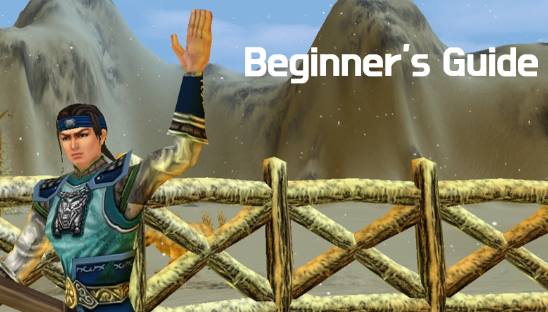Seja bem-vindo ao nosso tutorial Herói.
Passo 1: [Criando Personagem]
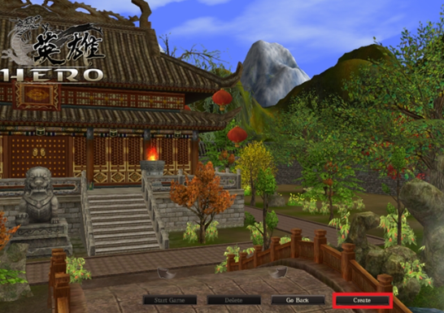Como não há nenhum personagem existente, clique para criar um personagem. Você pode criar 6 personagens por conta!
Passo 2: [Personalizando Personagem]
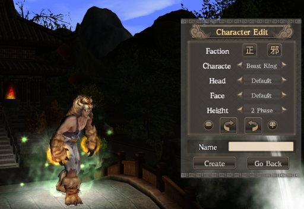Se você clicou em 'Criar', é hora de personalizar seu personagem! Existem 3 conceitos principais que você pode escolher. [Facção/Personagem/Altura].
Passo 3: [Facção]
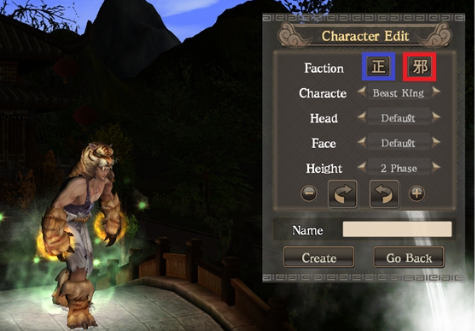[Facção] Justiça (Zhuang) Caos (Shao) Depois de criar um personagem como Justiça (Zhuang), você não poderá transferir/criar um personagem Caos (Shao) (vice-versa)
Passo 5: [Personagem]
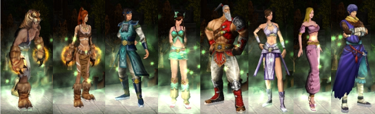Existem 8 personagens diferentes que você pode criar!Rei Besta / Imperatriz / Baej-Moo-Ju / Dae-So-Ryu / Gwak-Chun / Lim-Ah-Ryu / Ho-wal-you / Hyun-Jang (Esquerda → Direita )
Passo 6: [Altura]
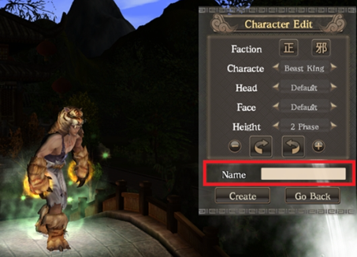Há 0 Fase ~ 4 Fases. A fase 0 é a menor e a fase 4 é a maior Escolha com cuidado, você não poderá alterar a altura no jogo! Após terminar de personalizar, insira o nome do personagem:(Se você quiser mudar o nome do seu personagem no futuro, há um item, 'Charm of Identity' para mudá-lo no jogo ).
Passo 7: [Iniciar jogo]
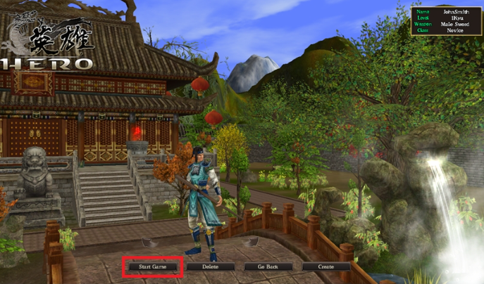Abra o bau iniciante que receberá em seu inventário, recebendo itens que te auxiliam no crescimento e evolução do personagem.
Passo 8: [Atalhos]
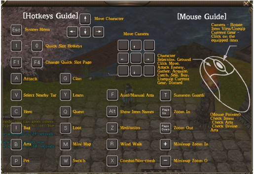Apertando a tecla "H" você consegue visualizar um campo com atalhos.
Passo 9: [Comece sua jornada]
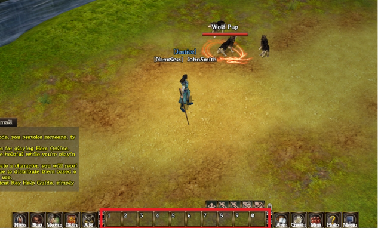Você pode escolher um monstro com um clique esquerdo. Se você clicar com o botão esquerdo mais uma vez ou pressionar 'A', seu personagem causará dano a um monstro com ataque normal. Se seu personagem aprender habilidades, você pode colocá-las nas barras de atalho e pressionar #1~9 para causar dano a um monstro com ataque de habilidade.
Passo 10: [Atalhos]
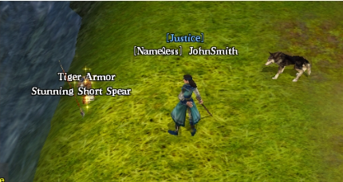Quando você mata um monstro, às vezes um item brilhante cai. Você pode verificar o nome deste item pressionando 'Alt'. Você também pode obter este item clicando com o botão esquerdo ou pressionando 'S'.
Passo 11: [Avançado ]
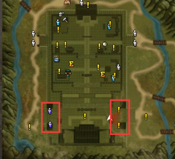Se um personagem alcançasse 1 Dan 0Kyu (Nv. 10), você poderia ir até o Treinador Médico Bong, o Treinador Guerreiro General Hwang, o Treinador Caçador Han, o Treinador Assassino Bing para escolher uma profissão como Curandeiro, Guerreiro, Caçador e Mercenário. Depois de escolher um trabalho, você pode obter um livro de habilidades.Se um personagem atingir 5 Dan 0Kyu (Nv. 50), você pode passar para uma segunda classe. 2ª tarefa: deixe seu personagem mais forte com diferentes conjuntos de habilidades.
Passo 12: [Livro de habilidades adicionais]
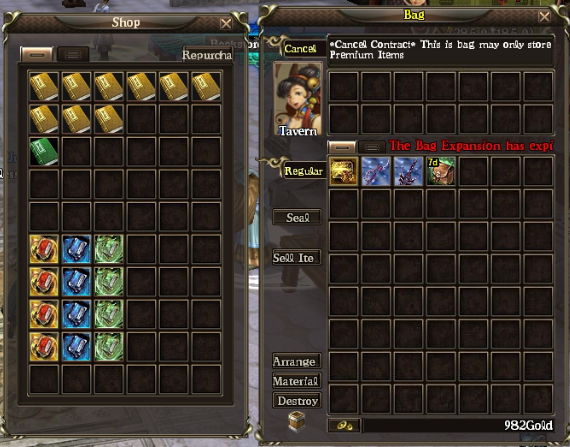Vá até o Bookstore Clerk Seo para comprar livros de habilidades básicas. Você pode derrotar um monstro facilmente com um livro de habilidades!